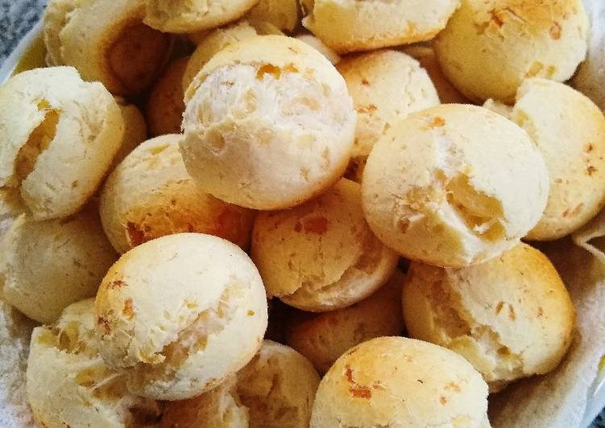

Aqui debajo les dejo un navegador con cuatro recetas mas por si les sirve!

antes de comenzar con la receta cabe recalcar que aunque muchos piensen que el chipa nos pertenece como argentinos, este maravilloso
invento proviene del gran Paraguay, siendo mas especificos de Monte Lindo
(aqui les dejo la ubicacion de Monte Lindo)
Para todo aquel que no pueda consumir TACC, aqui les dejo linkeado el video de una colega que se especializa en recetas sin TACC.